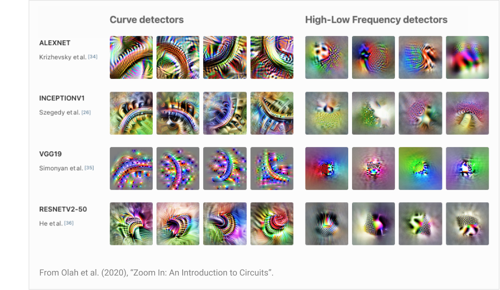
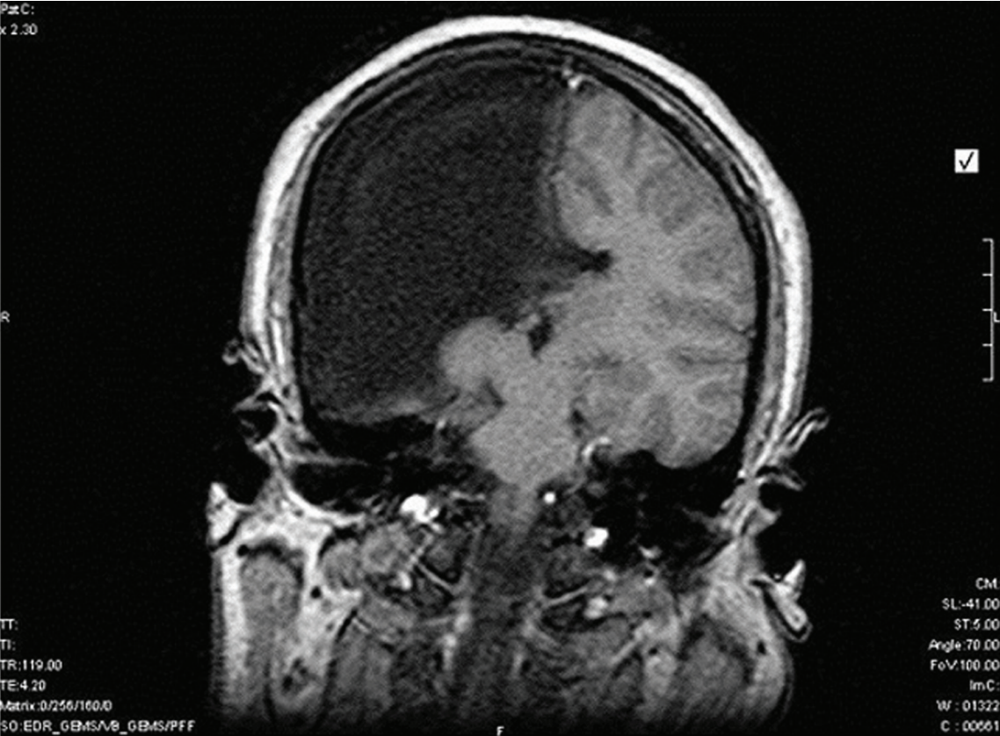

The Complication of Genetically Coded Social Reward
Understanding how our genomes could possibly encode the structures that detect when to punish us for pain, and when to reward us for sweet tastes, is relatively simple. There are special-purpose receptors for both categories of stimuli, which can be wired to a specific location in the brain, as is routine with other bodily functions, with only minimal processing required. Many more abstract aversions and goals can then be built on top of this through learned structures that, for example, learn to associate a steep increase in perceived temperature, with pain coming in the near future. Aversions have a contagious nature, resulting in this learned connection creating an aversion to this steep increase in temperature, and in turn the organism may learn an association between the visual stimuli of a flame, and that steep increase, creating a new aversion, and so on. This fractal tree of connections which aversions and desires flow through (sometimes even contextually, based on other signals like hunger, or more abstract world states), can be understood as stemming from simple genetically encoded pain and pleasure in response to signals from purpose-built sensors, plus relatively simple learning rules that propagate these aversions and desires to learned higher abstractions over time.

For many social rewards that are (presumably) encoded within our genome, however, the story must be more complicated. If different social behaviors are indeed encoded to be intrinsically rewarding, such as courting behavior, status seeking, nurturing, and norm enforcement, then there are no specialized status receptors or hardcoded norm violation detectors. The detection of the world states corresponding to these goals relies on many layers of abstraction machinery learned through experience, that can even vary based on culture and experience. Take social status for example: picture someone stepping out of a limousine onto a red carpet, wearing a tuxedo and being greeted by hundreds of people all trying to take pictures of you. Now picture the same scenario except with a van instead of a limousine, an orange jumpsuit instead of a tuxedo, no red carpet, but still the swarm of photographers. The differences here are quite far abstracted from raw sensory inputs, and interpreted through a cultural lens (what vehicles and attire are used for what roles, what a red carpet means), and yet one clearly signals high status, and the other signals the opposite. Now, much of this can be explained the same way that fearing a flame is explained, through a world model that propagates aversion or desire from an intrinsic reward function, to more abstract world states. But what is the intrinsic reward function for social status?
One possible story is that the concept of social status as an abstract goal emerges completely organically from much more primitive rewards, such as regulating body temperature, avoiding pain, and eating. Perhaps because early in life all of these needs are fulfilled by parents, the abstract concept of having things done for you is imbued with the valence of satisfying these core biological needs, and then this "Other people doing things for you" node acts as if it was an intrinsic goal itself, leading naturally to modelling social hierarchies and associating high valence to higher positions in them. I'm not willing to totally discount this narrative, at least when it comes to some fraction of human social behavior, but it doesn't seem to explain absolutely everything, for example nurturing your children, and other animals show examples of social behavior that cannot come about in the way I described.
The Universality Hypothesis
Chris Olah's universality hypothesis states that different models converge on the same internal structures when being trained on the same domain. First, this was shown for convolutional neural networks, showing that different CNNs learned the same types of filters, but more interestingly, these filters also match what our brains are doing in visual processing, building edge and colour detectors, then building more abstract feature detectors on top of these building blocks, and so on. Research by Anthropic has found strong evidence of universality across language models too, finding meaningful features, such as the Arabic script feature, and the DNA sequence feature, that exist across models. If universality applies between brains, then we should expect to find very similar learned structures that correspond to the same concepts, including social concepts, in most brains. Each human's "training data" is quite different, depending on where you grew up, who your friends and family are, and your genetics, so we should only expect to see universality in the structures responsible for interpreting only the most universal of human experiences, one of which would be the basics of social interaction: you live in a world which contains other human beings, who are intelligent, have their own goals, and regularly interact with you.
Examples of very similar types of features being found in multiple different CNNs
Now, across neural networks, even ones with identical architectures, features that are found in both are rarely found in the identical position, as a result of differences in random weight initialization. These differences grow when you stack differences in architectures, hyperparameters, order and augmentation of data, and data itself. Biology is no more controlled than this, so we can't assume that universal features would be built in the same locations across all brains.
MRI of a man missing half a brain hemisphere, described as "functioning normally" in daily life
So the same structures for detecting and representing highly abstract concepts such as specific social situations are likely to form across brains, but not in the same location. This makes it impossible for a genome to simply code for reward structures to appear in an exact location in order to code for social rewards. How else may it be done?
Neural Cellular Automata
Neural cellular automata (NCA) are cellular automata similar to Conway's game of life, except that the update rule for the cells is determined by a neural network. By training the rule network on each pixel of an image, it learns a complex rule that updates the cell differently in different situations, to recreate the image it was trained on. The resulting process is analogous to differentiation of living cells in multicellular organisms: They all contain the same genome, and yet the way that the genome specifies different responses to different surroundings and inputs results in different cells playing very different roles which in aggregate form large and complex structures made of distinctly different parts.

An example of a neural cellular automata where the rule was trained on an image of a gecko. Note that the update rule for every cell is the same, and the differentiation is emergent, stemming from differences in the local environment of each "cell". Demo
Tying It All Together
NCA provides the solution to the problem of creating reward circuitry that links into universal features, wherever they may appear in the brain. If these universal social features appear across brains in different locations, and are implemented in very similar ways, then there will be some configuration in the brain that can be reliably "recognized" by an NCA-style rule, which then builds the required structure around it, implementing reward circuitry which provides intrinsic rewards for highly abstract concepts that are learned, not directly coded in the genome.